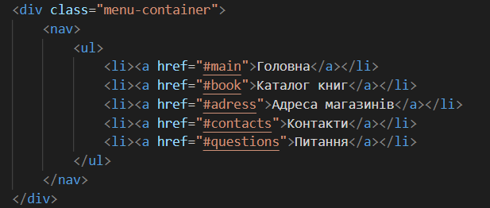
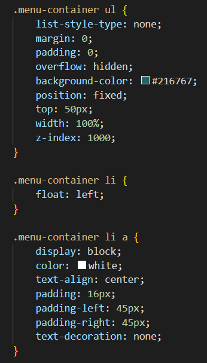
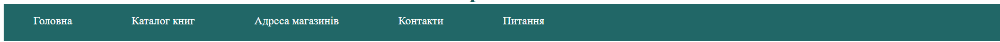

ЗВІТИ З ЛАБОРАТОРНИХ РОБІТ З ДИСЦИПЛІНИ "ІНТЕРНЕТ-ТЕХНОЛОГІЇ
та ПРОЄКТУВАННЯ WEB-ЗАСТОСУВАНЬ"
Виконала студентка групи ІС-33 Сливка Вероніка
Лабораторна роб. №1
Лабораторна роб. №2
Лабораторна роб. №3
Лабораторна роб. №4
Лабораторна роб. №5
Лабораторна роб. №6
Лабораторна роб. №7
Лабораторна роб. №8
Лабораторна роб. №9
Тема, мета ЛР №2. Місце розташування сайту, звіту
Способи підключення стилів
СЕЛЕКТОРИ
Селектор тегу
Селектори класу
Селектори ідентифiкаторів
Інші селектори
CSS: Шрифти, Текст, Таблиці, Фон, Контур, Списки, CSS Просунутий
Висновки до ЛР №2


